Install Clear Linux* OS from the live desktop
This page explains how to boot the Clear Linux* OS live desktop image, from which you can install Clear Linux OS or explore without modifying the host system. Alternatively, use a YAML configuration file to install Clear Linux OS.
System requirements
Before installing Clear Linux OS, verify that the host system supports the installation:
Requires 20 GB or more disk space
Preliminary steps
Visit our Downloads page.
Download the file
clear-<release number>-live-desktop.iso, also called the Clear Linux OS Desktop.Note
<release-number> is the latest Clear Linux OS auto-numbered release.
Follow your OS instructions to create a bootable usb drive.
Install from live image
After you download and burn the live desktop image on a USB drive, follow these steps.
Insert the USB drive into an available USB slot.
Power on the system.
Open the system BIOS setup menu by pressing the F2 key. Your BIOS setup menu entry point may vary.
In the setup menu, enable the UEFI boot and set the USB drive as the first option in the device boot order.
Save these settings, e.g. F10, and exit.
Reboot the target system.
{kind=link}
Verify integrity of installer media (optional)
Use Verify ISO Integrity to verify the checksum of the image burned to the installer media. The checksum ensures that the ISO is uncorrupted (see Figure 1). For every ISO generated, the clr-installer implants checksums, which are verified during early boot stage as part of initrd.
Select Verify ISO Integrity. The media will be validated.
If the check passes, it will boot into the live image. Continue in the next section.
If the check fails, a failure message appears.
Restart the process at Preliminary Steps.
Launch the Clear Linux OS installer
After the live desktop image boots, scroll over the vertical Activities menu at left.
Click the Clear Linux OS penguin icon to launch the installer, shown in Figure 2.
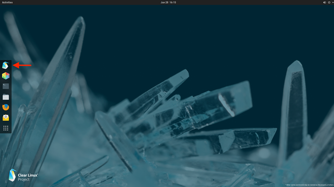
Figure 2: Clear Linux OS installer icon
After the installer is launched, it will appear as shown in Figure 3.
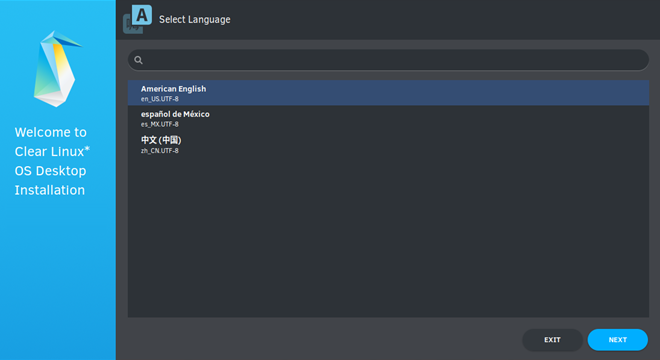
Figure 3: Clear Linux OS OS Desktop Installer
In Select Language, select a language from the options, or type your preferred language in the search bar.
Select Next.
{kind=link}
{kind=link}
Network Proxy (optional)
Configure Network Proxy settings.
In the top right menu bar, select the Power button.
Select Wired Connected and then Wired Settings.
In Network Proxy, select the Gear icon to view options.
Select an option from Automatic, Manual or Disabled.
Close Network Proxy.
Close Settings.
Minimum installation requirements
To fulfill minimum installation requirements, complete the Required options. We also recommend completing Advanced options.
Note
The Install button is only highlighted after you complete Required options.
Check marks indicate a selection has been made.
The installer image contains the default bundles required for installation. An Internet connection is only required if you install additional bundles from Advanced options.
Clear Linux OS Desktop Installer
The Clear Linux OS Desktop Installer Main Menu appears as shown in Figure 4. To meet the minimum requirements, enter values in all submenus for the Required options. After you complete them, your selections appear below submenus and a check mark appears at right.
{kind=link}
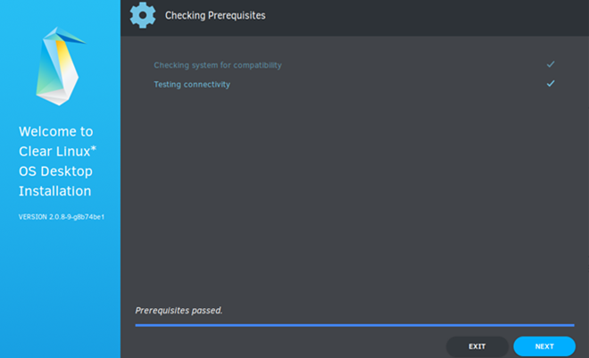
Figure 4: Clear Linux OS Desktop Installer - Main Menu
Required options
Select Time Zone
From the Main Menu, select Select Time Zone. UTC is selected by default.
In Select Time Zone, navigate to the desired time zone. Or start typing the region and then the city. (.e.g.,
America/Los_Angeles).Select Confirm.
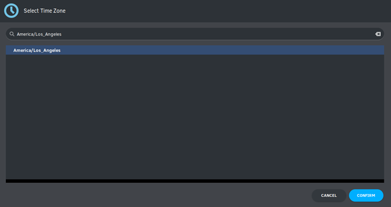
Figure 5: Select System Time Zone
{kind=link}
Select Keyboard
From the Main Menu, select Select Keyboard.
Navigate to your desired keyboard layout. We select “us” for the United States.
Select Confirm.

Figure 6: Select Keyboard menu
Select Installation Media
From the Main Menu, select Select Installation Media.
Choose an installation method: Safe Installation or Destructive Installation.
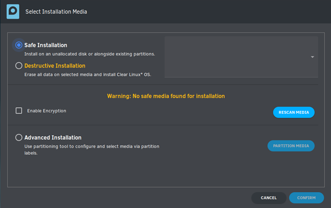
Figure 7: Select Installation Media
{kind=link}
Safe Installation
Use this method to safely install Clear Linux OS on media with available space, or alongside existing partitions, and accept the Default partition schema. If enough free space exists, safe installation is allowed.
Note
Clear Linux OS allows installation alongside another OS. Typically, when you boot your system, you can press an F key to view and select a bootable device or partition during the BIOS POST stage. Some BIOSes present the Clear Linux OS partition, and you can select and boot it. However, other BIOSes may only show the primary partition, in which case you will not be able boot Clear Linux OS. Be aware of this possible limitation.
Destructive Installation
Use this method to destroy the contents of the target device, install Clear Linux OS on it, and accept the Default partition schema.
Disk encryption
For greater security, disk encryption is supported using LUKS. Encryption is optional.
To encrypt the root partition, select Enable Encryption, as shown in Figure 8.
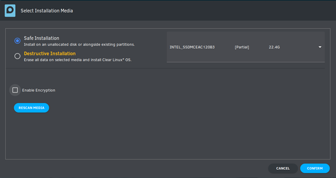
Figure 8: Enable Encryption
When Encryption Passphrase appears, enter a passphrase.
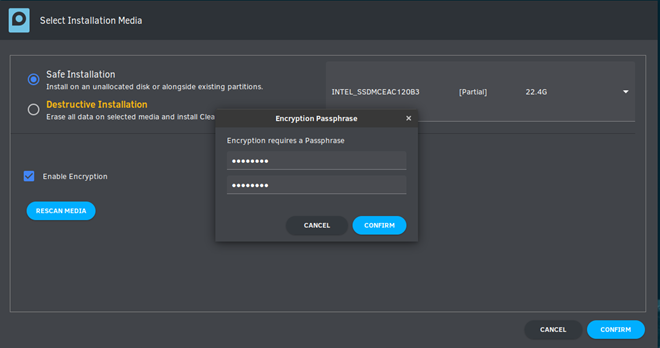
Figure 9: Encryption Passphrase
Note
Minimum length is 8 characters. Maximum length is 94 characters.
Enter the same passphrase in the second field.
Select Confirm in the dialogue box.
Note
Confirm is only highlighted if passphrases match.
Select Confirm in submenu.
{kind=link}
{kind=link}
Advanced Installation
Use this method to manually partition the target media using gparted.
Our example uses the Default partition schema. The space you allocate for
root, or additional partitions, may vary.
Select Advanced Installation.
Select Partition Media, shown in Figure 11.
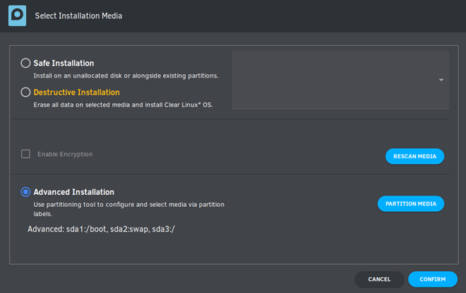
Figure 10: Advanced Installation
{kind=link}
boot partition
Select the available target media shown as unallocated.
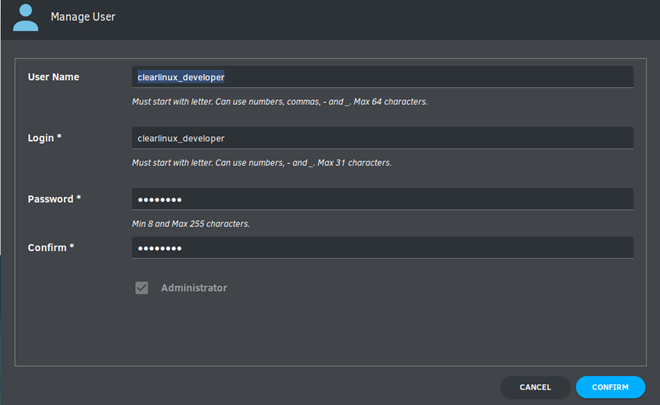
Figure 11: Advanced Disk Partitioning
Choose .
In the Warning screen, under Select new partition table type , select gpt from the pull-down menu.
Select Apply.
Select .
Note
The /boot partition must be VFAT(FAT32).
In Create new Partition, complete the following fields to match Figure 12. Don’t change other default values.
New size: 150
Partition name: CLR_BOOT
File system: fat32
Label: boot
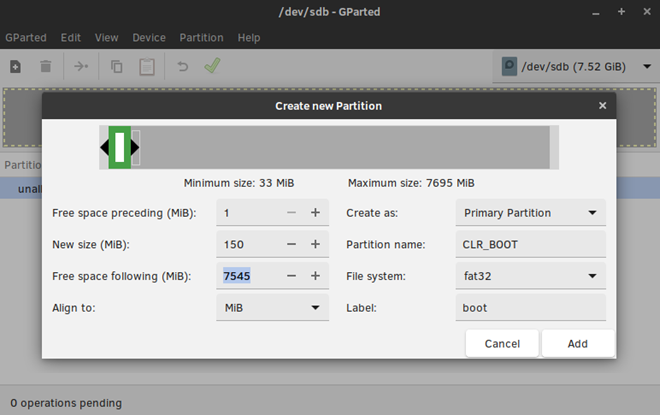
Figure 12: boot partition
Select Add.
{kind=link}
{kind=link}
swap partition (optional)
A swapfile is generated by default during installation. However, if you prefer to create a swap partition, follow the steps below.
With unallocated highlighted, select from the menu .
In Create new Partition, complete the following fields to match Figure 13. Don’t change other default values.
New size: 256
Partition name: CLR_SWAP
File system: linux-swap
Label: swap
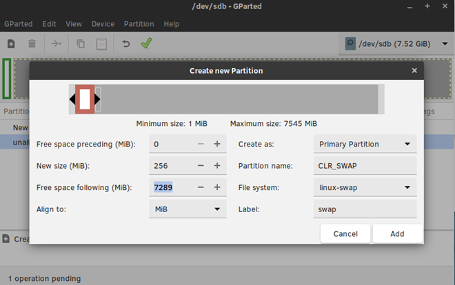
Figure 13: swap partition
Select Add.
{kind=link}
root partition
With unallocated highlighted, select from the menu .
In Create new Partition, complete the following fields to match Figure 14. Don’t change other default values.
In New size, enter the desired size, or leave as is to accept the default: remaining size.
New size: <varies>
Partition name: CLR_ROOT
File system: ext[234], XFS, or f2fs
Label: root
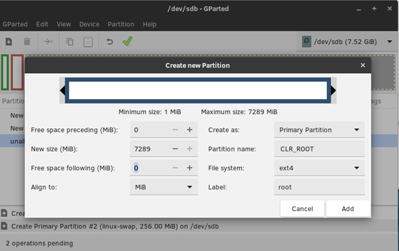
Figure 14: root partition
After all partitions are defined, verify your partition configuration is similar to Figure 15.

Figure 15: Final partition configuration
Select .
A dialog box appears asking “Are you sure you want to apply the pending operations?”
Select Apply.
When dialog Applying pending operations is complete, select Close.
Select .
{kind=link}
You are returned to installer.
Manage User
In Required Options, select Manage User.
In User Name, enter a user name.

Figure 16: Manage User
In Login, create a login name. It must start with a letter and can use numbers, hyphens, and underscores. Maximum length is 31 characters.
In Password, enter a password. Minimum length is 8 characters. Maximum length is 255 characters.
In Confirm, enter the same password.
Note
Administrator rights are selected by default. For security purposes, the default user must be assigned as an Administrator.
Select Confirm.
Note
Select Cancel to return to the Main Menu.
Modify User
In Manager User, select Manage User.
Modify user details as desired.
Select Confirm to save the changes you made.
Note
Optional: Select Cancel to return to the Main Menu to revert changes.
Optional: Skip to Finish installation.
Telemetry
Choose whether to participate in telemetry. Telemetrics is a Clear Linux OS feature that reports failures and crashes to the Clear Linux OS development team for improvements.
From Required Options, select Telemetry.
Select Yes.
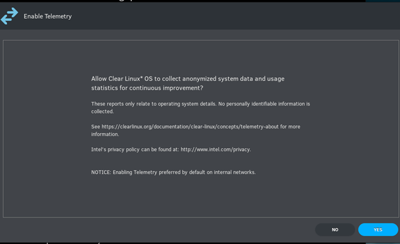
Figure 17: Enable Telemetry
If you don’t wish to participate, select No.
{kind=link}
Advanced options
After you complete the Required options, we recommend completing Advanced options–though they’re not required. Doing so customizes your development environment, so you’re ready to go immediately after reboot.
Note
You can always add more bundles later with swupd.
Select Additional Bundles
This option is only available with a valid network connection. Bundle selection is disabled if no network connection exists.
On the Advanced menu, select Select Additional Bundles.
Select your desired bundles.
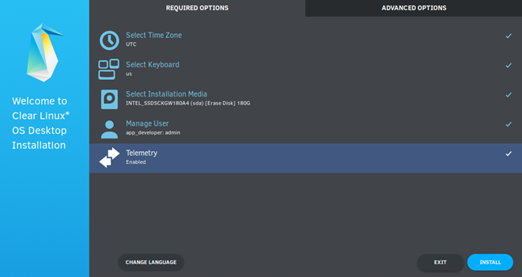
Figure 18: Bundle Selection
Select Confirm.
View the bundles that you selected.
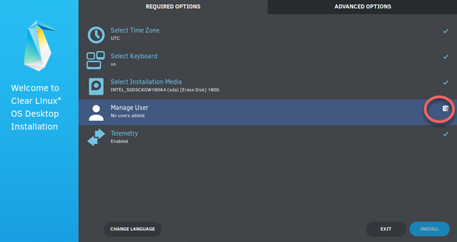
Figure 19: Select Additional Bundles
{kind=link}
{kind=link}
Optional: Skip to Finish installation.
Assign Hostname
In Advanced Options, select Assign Hostname.
In Hostname, enter the hostname only (excluding the domain).
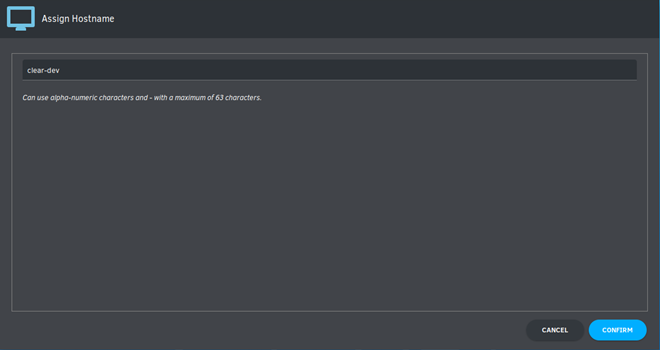
Figure 20: Assign Hostname
Note
Hostname does not allow empty spaces. Hostname must start with an alphanumeric character but may also contain hyphens. Maximum length of 63 characters.
Select Confirm.
{kind=link}
Optional: Skip to Finish installation.
Kernel Configuration
In Kernel Configuration, navigate to select your desired kernel. Native is selected by default.
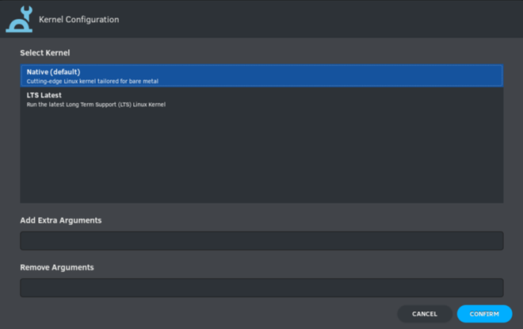
Figure 21: Kernel Configuration
To add arguments, enter the argument in Add Extra Arguments.
To remove an argument, enter the argument in Remove Arguments.
Select Confirm.
{kind=link}
Software Updater Configuration
In Advanced Options, select Software Updater Configuration.
In Mirror URL, follow the instructions if you wish to specify a different installation source.
Enable Auto Updates is selected by default. If you do not wish to enable automatic software updates, uncheck the box.
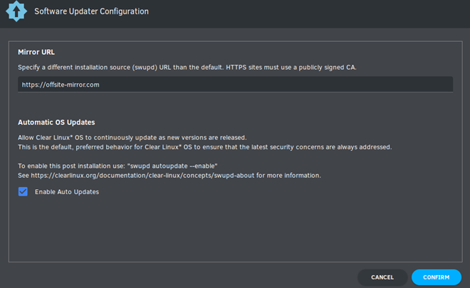
Figure 22: Software Updater Configuration
Select Confirm.
{kind=link}
Finish installation
When you are satisfied with your installation configuration, select Install.

Figure 23: Finish installation
If you do not enter a selection for all Required Options, the Install button remains disabled, as shown in Figure 24. Return to Required Options and make selections.

Figure 24: Required Options - Incomplete
After installation is complete, select Exit.
Shut down the target system.
Remove the USB or any installation media.
Power on your system.
Note
Allow time for the graphical login to appear. A login prompt shows the administrative user that you created.
Log in as the administrative user.
Congratulations. You successfully installed Clear Linux OS.
Default partition schema
Create partitions per requirements in Table 1.
FileSystem |
Label |
Mount Point |
Default size |
|---|---|---|---|
|
boot |
/boot |
150MB |
|
root |
/ |
Size depends upon use case/desired bundles. |
Note
A 64MiB swapfile is generated by default. The default size may be set
manually with the --swap-file-size command-line option.